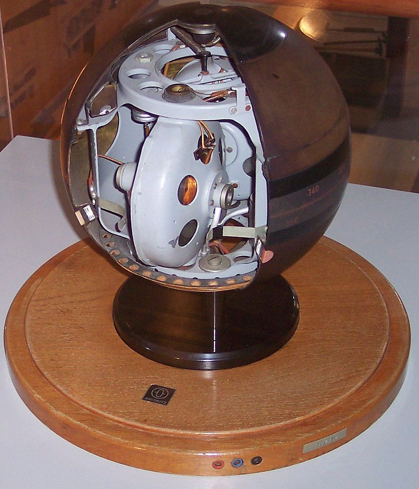
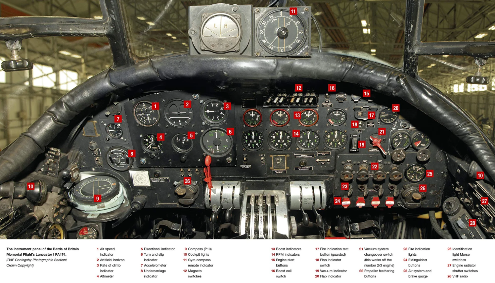
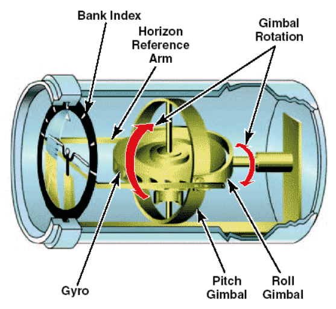
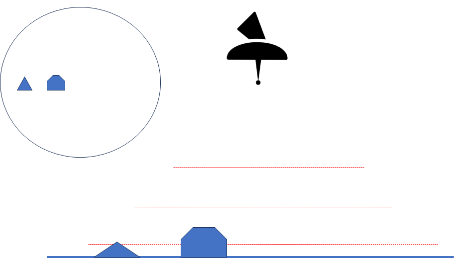
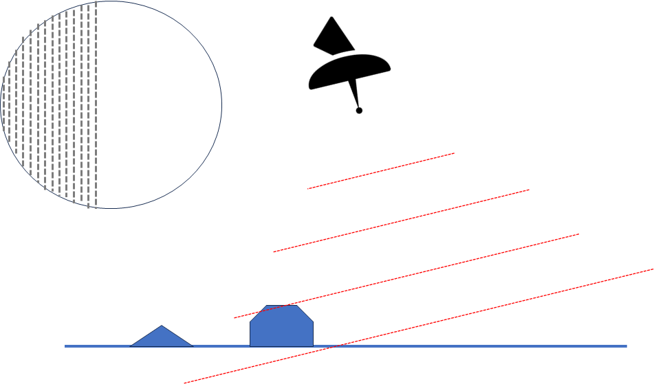
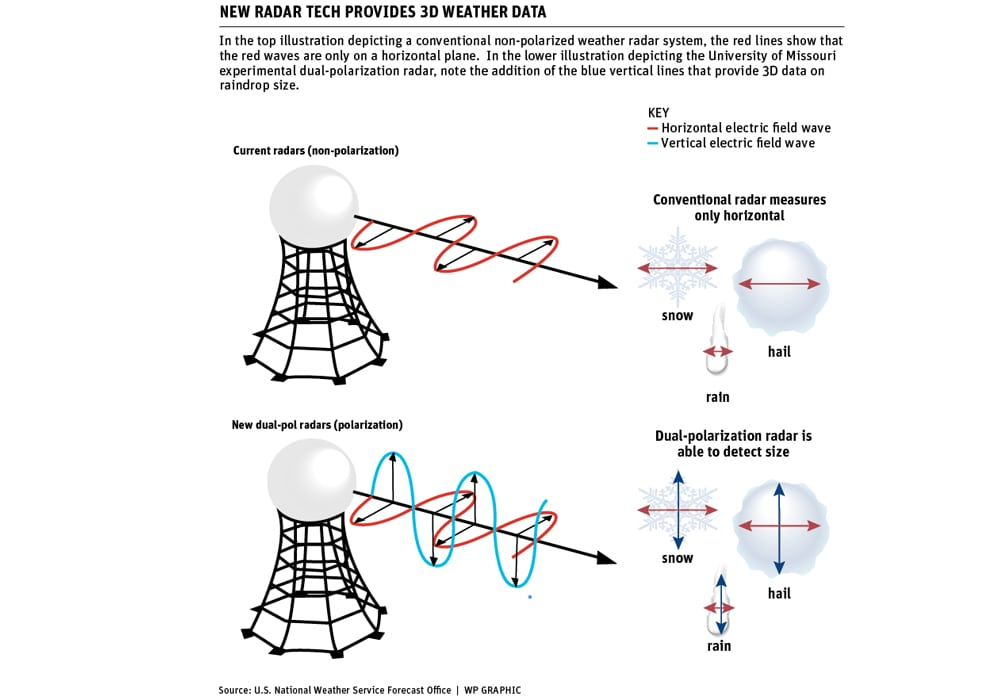
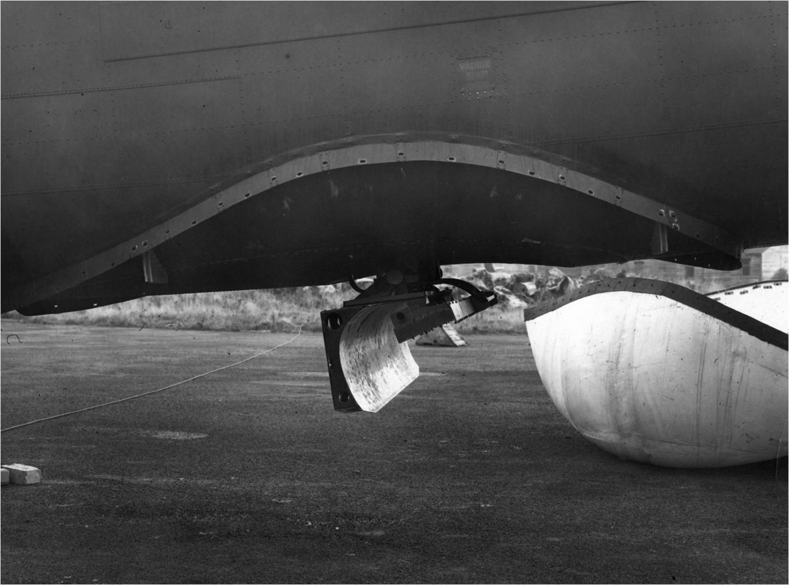
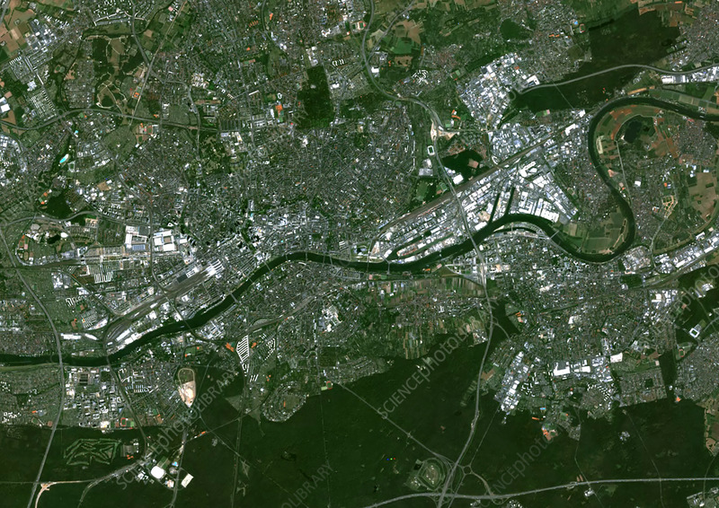
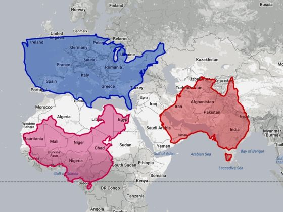
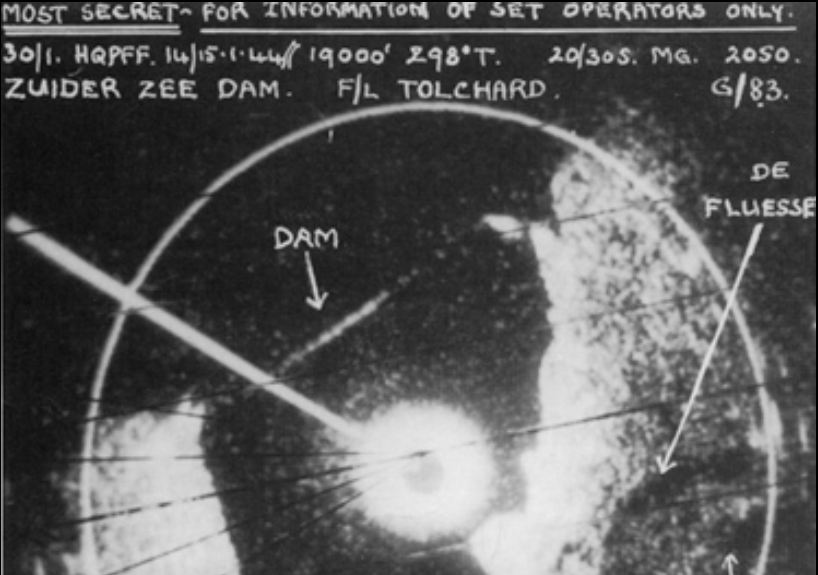

레이더 개발 이야기 (45) - 레이더 깎는 노인, 아니 영국 공군
게시: 2023-08-31T06:30:59+09:00
<깨알 같은 개선점들> H2S 공대지 레이더는 테스트를 거치면 거칠 수록 점점 더 개선됨. 1942년 4월, H2S를 테스트하던 항법장교 E. Dickie 중위는 '지도는 언제나 북쪽이 위인데, H2S 레이더 스코프는 폭격기 기수 방향이 위로 되어 있어서 헷갈린다'라고 불평. 이게 딱히 틀린 말은 아닌데다, 속성 훈련만 받고 살 떨리는 독일 야간 폭격에 투입되는 항법사들의 질적 문제를 생각할 때 조금이라도 덜 헷갈리게 만드는 것이 중요하다고 판단되어 그에 대한 개선 작업이 이루어짐. H2S의 PPI scope 화면을 폭격기의 자이로컴패스(gyrocompass)와 서버(servo) 모터를 통해 동기화시켜 항상 위가 북쪽을 향하도록 회전시킨 것.

(Anschütz 자이로컴패스의 단면도. 안슈츠는 1905년 독일 Kiel에서 설립된 회사로서 선박용 자이로컴패스를 전문으로 만들던 회사. WW2 이후 분해되었으나 이런저런 과정을 거쳐 결국 미국의 방위산업체 Raytheon에 인수됨.)

(Avro Lancaster 폭격기의 조종석. 계기판 윗부분에 11번이라고 표시된 것이 바로 gyrocompass. 왼쪽 아래의 9번은 그냥 자성 나침반. 회전하는 gyroscope의 회전력에 의해 항공기가 어느 방향을 향하건 이 자이로컴패스는 처음 고정된 방향을 계속 가리킴. 지구는 하루에 1번 자전하는데 자이로컴패스는 그와 무관하게 계속 같은 방향을 가리키므로 하루 종일 지켜보면 자이로컴패스가 조금씩 회전하여 하루만에 원래 방향을 가리키게 되는 것을 볼 수 있음.)

(자이로컴패스의 대략적인 구조. 항공기나 선박에는 자석 나침반 외에도 저렇게 자이로컴패스도 붙어 있는데, 얘들은 자석 나침반과는 달리 자북(magnetic north)이 아니라 정북을 가리키고 외부 자력의 영향을 받지 않으므로 더 정확하다고.) 기껏 이렇게 고쳐주자 또 다른 불만이 터져나옴. 전에는 항상 화면 윗방향이 항공기 진행 방향이었는데, 이젠 화면만 보고는 우리 항공기가 어디로 향하고 있는지 알 수가 없다는 것. 이것도 개선해줌. 레이더 스코프 화면에 밝은 선 하나를 항공기 진행 방향으로 그어준 것. 나중에는 별 희한한 불만도 들어왔음. 지형을 스캐닝하는 레이더답게 H2S의 전파는 수평 방향으로 편광(horizontally polarized)되어 발사됨. 그러다보니 폭격기가 선회하기 위해 기수를 틀 때 자연스럽게 한쪽 방향으로 전파도 기울게 되는데, 그럴 때마다 그렇게 기운 쪽에는 수평의 전파가 일찍 부딪혀 버리므로 레이더 스코프의 해당 반쪽이 온통 새히얗게 나온다는 것.
 
(폭격기가 선회하느라 한쪽으로 기울 때마다 화면의 절반이 저런 식으로 먹통이 된다면 짜증이 나긴 할 듯.)

(기상 레이더도 예전에는 평면으로 퍼전 구름 넓기만 중요했기 때문에 수평 방향으로 편광된 전파만 쏘았는데, 점점 발전하면서 이젠 수직 수평 양방향으로 편광된 전파를 쏜다고. 덕분에 구름 속 알갱이의 모습도 다 잡아내어 저 구름 속에 있는 것이 눈인지 우박인지 빗물인지 구별할 수가 있음.) 어지간하면 "그냥 폭격기가 수평이 될 때까지 참으면 될 것 아닌가?" 싶은데 그게 의외로 중요함. 이유는 폭격의 마지막 순간에 방향을 조절하기 위해 좌우로 조금씩 선회하는 경우가 많은데, 폭격에 있어 가장 중요한 순간에 레이더가 쓸모 없으면 곤란하기 때문. 그래서 그 경우도 항공기가 좌우 한쪽으로 기울더라도 레이더 송신기는 역시 자이로컴패스와 연계시켜 수형 유지를 하도록 고쳐줌.

(당시 영국 폭격기 동체 하부에 붙어있던 H2S radar scanner) 이런 가상한 노력에도 불구하고 불평불만은 그치질 않았음. H2S에서 감지 가능한 거리가 40~50km일 때는 큰 문제가 아니었으나, 나중에 160km까지 늘어나게 되자 그에 따른 문제가 생겼음. 우리 눈에 보이는 풍경은 태양에서 오는 빛이 물체에 반사되어 오는 것. 즉 그냥 거리에 정비례. 그러나 레이더 스코프에 보이는 풍경은 우리 측 레이더에서 그 물체까지 갔다가 반사되어 돌아온 것. 그러니까 거리에 2배로 비례. 그렇게 가까이 있는 지형은 지도에 나온 것과 별반 다르지 않게 보였으나 레이더 스코프 저 바깥쪽, 그러니까 먼 거리에 있는 지형은 지도에서 본 것과는 상당히 다른, 일그러진 모습으로 보이게 됨. H2S는 레이더 스코프에 비친 지형의 모습과 지도의 모양새를 비교해보고 현 위치를 파악하는 것인데, 항법사들이 지도와 비교를 못하면 모든 것이 말짱 꽝이 되어버리는 문제임.

(사진은 프랑크푸르트의 위성 사진. 독일은 큰 땅덩어리이고 눈에 띄는 큰 산맥이 곳곳에 다 있는 것이 아니기 때문에 약간 지형의 모양새가 일그러지면 미숙한 항법사들이 길을 잃기 딱 쉬움.)

(원래 지도 자체도 구형 위에 있는 모습을 평면으로 펼쳐 놓은 것에 불과하여 특히 저위도의 국가들이 작아보이는 문제가 있기는 함.) 이 문제를 해결하기 위해 레이더 연구팀은 또 분주했음. 결국 엔지니어인 F.C. Williams가 그렇게 제곱으로 늘어나는 거리를 제대로 줄여서 보여주기 위한 timebase generator (시간축 생성기)를 만들어내면서 해결. 그런데 레이더 운용사를 가장 많이 괴롭혔던 것은 바로 center-zero 문제. Center-zero란? 바로 초기 공대공 레이더인 AI를 끈질기게 괴롭히던 문제인 대지 반사파로 인해 발생하는 문제. 전파를 앞을 향해 쏘아도 일부는 아래로 날아가 대지에 부딪힌 뒤 또렷하고 강력한 신호를 잔뜩 보내오는 현상. 더군다나 H2S는 아예 앞이 아니라 아래를 향해 전파를 쏘는 공대지 레이더였으니 그런 현상이 있는 것은 당연. 그래서 PPI 레이더 스코프의 한 복판에는 언제나 허옇게 처리된 원 부분이 있었음. 그 원의 반경이 곧 그 항공기의 고도에 해당. 그 허연 원을 center-zero라고 불렀는데, 이 원 안에 있는 것은 대지 반사파에 가려져 아무 것도 보이 않았으므로, 레이더 반사파를 표시할 때 timebase generator (시간축 생성기)의 다이얼을 조정하여 가급적 그 크기를 줄이려 노력했음.

(네덜란드 해안가의 댐을 스캐닝한 이 사진에서도 선명히 보이는 center-zero) 그런데 그런 center-zero에서 의외의 새로운 것이 발견됨. 그리고 그 발견은 모스키토 야간 전투기와 핵폭탄까지 연결됨. 그 이야기는 다음에.